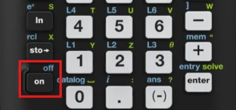
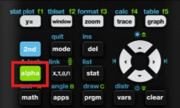
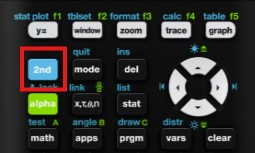
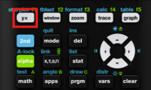

To power on your TI-84+CE, press the ON button at the bottom left. Use the arrow keys to move around menus and lists. The 2ND key (blue) and ALPHA key (green) let you access alternate functions of buttons.
The ALPHA key allows you to type letters and access the green secondary functions printed above many keys. For instance, pressing ALPHA + MATH brings up the “FUNC” menu. It’s useful for naming variables or entering text in programs.
The 2ND key activates blue-labeled commands above buttons. This is how you access functions like inserting a negative sign, the ANS recall, or changing modes. It’s essential for navigating deeper calculator features.
Press the Y= key to enter graph mode. From here, you can type in equations like Y1 = X² and press GRAPH to visualize them. Use the WINDOW button to adjust the graph view and TRACE to move along the curve.
This video provides a general overview of important TI-84+CE functions every beginner should know.